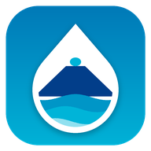

Balance climático simplificado · 30 días
--
Cargando…

Gobernanza del Agua
Indicador climático (lluvia − evapotranspiración de referencia). No mide la recarga del acuífero ni la disponibilidad real de agua.
30 días estimados por el modelo y 7 días de pronóstico ·
Cargando…
Tocá el mapa para consultar la lluvia de un punto, o un elemento para ver su fuente y confianza.
Cargando metadatos…
Cargando…
Cargando…
Mismos indicadores y periodos para las tres zonas. Son datos de modelos: sirven para comparar tendencias, no como mediciones locales.
Cargando…
Cargando…
Cada resultado publicado indica sitio, coordenadas, fecha, responsable, método, equipo, unidad, límite de detección y laboratorio. Las estimaciones meteorológicas nunca se presentan como calidad del agua.
Conecta actores, proyectos, acuerdos, responsables y plazos. El observatorio no sustituye las competencias legales de cada institución: facilita información, coordinación y rendición de cuentas.
Guardados solo en este teléfono.
Qué datos se recopilan. Solo los que escribís al enviar un reporte: tipo, descripción, referencia del sitio, coordenadas (únicamente si marcás un punto en el mapa), fotografía (opcional), y nombre y contacto (opcionales). La app no usa el GPS ni pide permisos de ubicación, cámara o contactos.
Para qué se usan. Para registrar, clasificar y atender el reporte, y para estadísticas agregadas sin datos personales.
Dónde se guardan. En el registro central de la iniciativa Gobernanza del Agua. Los nombres, teléfonos, correos y ubicaciones precisas no se publican en tableros públicos.
Cuánto tiempo. El necesario para atender el caso y documentar su cierre; después se conservan solo datos agregados.
En este teléfono. La app guarda tus reportes, la zona elegida, la calculadora y los últimos datos consultados para funcionar sin conexión. Podés borrarlos cuando quieras.
Servicios externos. El clima se consulta a Open-Meteo y el mapa base a OpenStreetMap; como cualquier sitio web, reciben la dirección IP del dispositivo.
Plataforma de la iniciativa Gobernanza del Agua para conocer, proteger y gestionar participativamente el agua del cantón de Poás.
Observado medición de una estación o instrumento local (aún no hay estaciones integradas).
Estimación salida de un modelo para el punto consultado.
Reanálisis reconstrucción climática histórica (ERA5).
Pronóstico valor esperado a futuro; puede cambiar.
Pendiente de validación dato que requiere contraste con mediciones locales.
Mapas © colaboradores de OpenStreetMap. La app no descarga mapas para uso sin conexión. Esta herramienta es informativa y no sustituye a las fuentes oficiales (IMN, AyA, SENARA, MINAE, CNE).